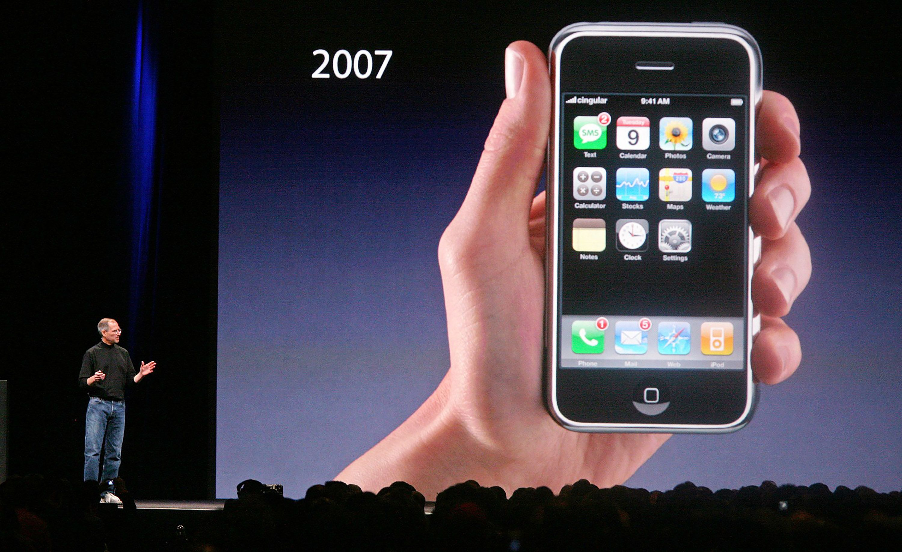

Digital Revolution
Beginning in the 1950s and continuing to this day, the Digital Revolution has profoundly transformed our world, reshaping how we live, work, and communicate.
This era of technological advancement has equipped us with an array of tools for connection, enhancing our ability to communicate and collaborate globally.
As technology evolves, it continually enhances our ways of living, working, and communicating, driving innovation and progress.
Events
In 1960, the invention of microchips and semiconductors, along with the definition of Moore's Law, marked significant advancements in technology.
In the late 1960s, the creation of ARPANET set the stage for the modern internet, laying the foundational infrastructure for global connectivity.
In 1990, Tim Berners-Lee revolutionized information retrieval by inventing the World Wide Web. The internet became publicly accessible, and in 1998, Google.com was founded.

In 1994, Amazon revolutionized retail by pioneering e-commerce, reshaping the shopping experience with online purchasing and delivery services.

By the late 1990s, the dot-com bubble led to a rapid rise and subsequent crash of internet-related stocks. On January 1, 2000, there was widespread concern over the Y2K issue.
Facebook was launched in 2004, YouTube in 2005, and Twitter in 2006, reshaping how people connect and engage in conversations.
In 2007, the introduction of the iPhone revolutionized accessibility to digital services and information, forever changing the way we connect and communicate.
In 2008, the advent of Bitcoin and blockchain technology ushered in a groundbreaking era of transaction security, transforming the landscape of digital finance.

Benefits of the Digital Revolution
There has been a change in communication, wherein people are able to communicate instantly across the globe through emails, social media, and video calls.
Information has become accessible to an unprecedented extent where it is just a click away on the Internet.
This revolution has changed industries in many ways, greatly improving efficiency and opening new avenues for innovation and entrepreneurship.
The Digital Revolution has improved convenience and connectedness, leading towards a globalized world that is more knowledgeable.